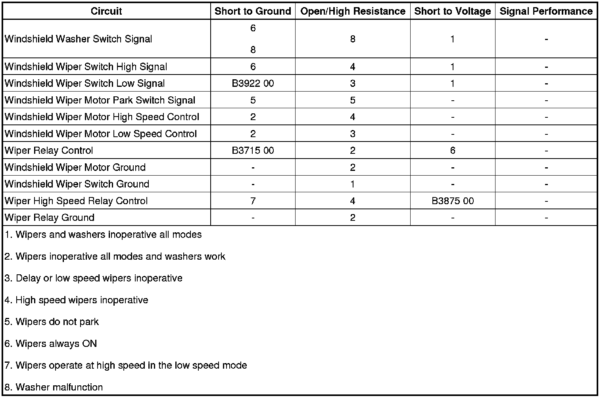

B3922
DTC B3922
Diagnostic Instructions
* Perform the Diagnostic System Check - Vehicle (Initial Inspection and Diagnostic Overview) prior to using this diagnostic procedure.
* Review Strategy Based Diagnosis (Initial Inspection and Diagnostic Overview) for an overview of the diagnostic approach.
* Diagnostic Procedure Instructions (Initial Inspection and Diagnostic Overview)provides an overview of each diagnostic category.
DTC Descriptor
DTC B3922 00
- Front Wiper Function Select Circuit
Diagnostic Fault Information

Circuit/System Description
The body control module (BCM) monitors the windshield wiper switch low signal circuit. When the wiper switch is place in the low position, battery voltage is applied through the switch contacts, a series of resistors, and the wiper switch low signal circuit to the BCM. The BCM then applies battery voltage through the wiper relay control circuit to energize the WPR relay. When energized, battery voltage from the WPR fuse is applied through the switch side of the WPR relay then through the switch side of the WPR HI relay to the windshield wiper motor.
Conditions for Running the DTC
The ignition switch is in the ON position.
Conditions for Setting the DTC
The BCM detects a short to ground on the windshield wiper switch low signal circuit.
Action Taken When the DTC Sets
* The BCM will not activate the low speed output.
* The windshield wipers will only operate in the high speed mode.
Conditions for Clearing the DTC
* The DTC will clear the current status when the condition for setting the fault is corrected.
* A history DTC will clear after 50 consecutive ignition cycles without a fault present.
Reference Information
Schematic Reference
Wiper/Washer Schematics ([1][2]Electrical Diagrams)
Connector End View Reference
Component Connector End Views (Connector Views)
Description and Operation
Wiper/Washer System Description and Operation (Wiper/Washer System Description and Operation)
Electrical Information Reference
* Circuit Testing (Component Tests and General Diagnostics)
* Connector Repairs (Component Tests and General Diagnostics)
* Testing for Intermittent Conditions and Poor Connections (Component Tests and General Diagnostics)
* Wiring Repairs (Component Tests and General Diagnostics)
Scan Tool Reference
Control Module References (Programming and Relearning)for Scan Tool Information
Circuit/System Verification
Ignition ON, observe the scan tool Windshield Wiper Switch parameter while rotating the wiper switch. The reading should change between Off, Intermittent, and Low.
Circuit/System Testing
1. Ignition OFF, disconnect the C1 harness connector at the turn signal/multifunction switch.
2. Ignition ON, verify the scan tool Windshield Wiper Switch parameter is not Switch Fault.
• If Switch Fault, test the windshield wiper switch low signal circuit terminal L for a short to ground. If the circuit tests normal, replace the BCM.
3. If all circuits test normal, test or replace the turn signal/multifunction switch.
Component Testing
Multifunction Switch
1. With the ignition OFF, disconnect the C1 harness connector at the turn signal/multifunction switch.
2. Test the resistance between terminals H and L. Rotate the wiper switch and compare the resistance readings to the values in the Windshield Wiper Switch Values table below for MIST, each DELAY and LOW speed.
• If the resistance is not within the specified range, replace the turn signal/multifunction switch.
3. Test for infinite resistance between terminals H and K while rotating the wiper switch to MIST, each DELAY and LOW speed positions.
• If the less than infinite, replace the turn signal/multifunction switch.
4. Test for less than 5 ohms of resistance with the wiper switch in the High speed position.
• If greater than 5 ohm, replace the turn signal/multifunction switch.
5. Test for infinite resistance between terminals H and J while rotating the wiper switch to MIST, each DELAY and LOW speed positions.
• If less than infinite, replace the turn signal/multifunction switch.
6. Test for less than 5 ohm of resistance while pressing the WASHER switch.
• If greater than 5 ohm, replace the turn signal/multifunction switch.
Important: If the switch tests open in any switch position other than Off, test the wiper/washer switch signal circuits for a short to voltage before replacing the switch.

Repair Instructions
Perform the Diagnostic Repair Verification (Verification Tests) after completing the diagnostic procedure.
* Turn Signal Multifunction Switch Replacement (Turn Signal Multifunction Switch Replacement)
* Control Module References (Programming and Relearning)for BCM replacement, setup, and programming